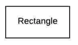
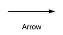
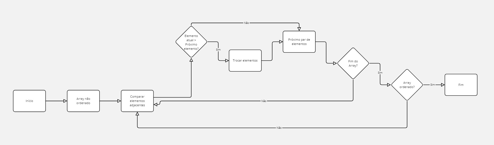
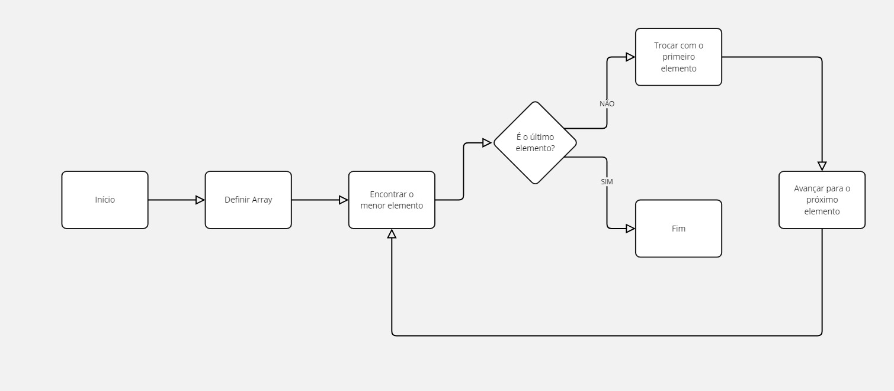
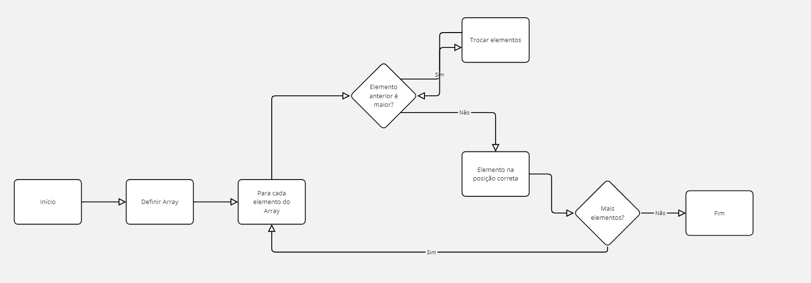
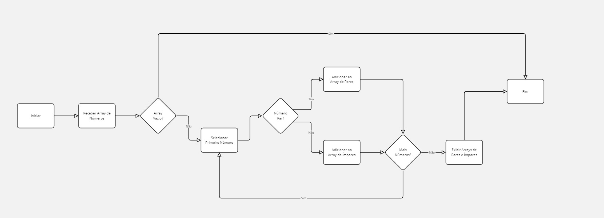

Exemplos de Algoritmos que utilizamos
Um fluxograma é uma representação visual dos algoritmos e processos de uma empresa, demonstrando o fluxo de entrada de dados, o processamento em cada etapa e os resultados finais. Ele facilita a compreensão dos processos, tornando-os mais claros e acessíveis, e ajuda a identificar possíveis áreas para otimização e melhorias.

Simbologia de fluxograma
A simbologia padrão de fluxogramas inclui:
Oval
Início e fim do processo.
Retângulo
Indica uma ação ou processo.
Losango
Representa uma decisão com caminhos possíveis.
Setas
Direcionam o fluxo do processo.
Paralelograma
Representa entrada e saída de dados.

Oval
Fluxograma do Bubble Sort
Mostra cada comparação e troca de elementos vizinhos, repetindo até que o array esteja ordenado.
Fluxograma do SelectionSort
Demonstra a busca do menor elemento em cada iteração e sua troca para ordenar a lista.
Fluxograma do InsertionSort
Representa a seleção e inserção ordenada de cada elemento, ajustando o restante dos elementos para ordenar.
Fluxograma com array de pares e ímpares
Este fluxograma exemplifica como um algoritmo separa números e ímpares em um array. O processo inclui percorrer cada número, verifique se é par ou ímpar e direcione-o para a lista correspondente.
Exemplo de software para fazer fluxograma
Lucidchart é uma ferramenta online usada para criar fluxogramas. É intuitivo e permite arrastar e soltar elementos, além de oferecer modelos prontos e de compartilhamento colaborativo, sendo ideal para criar fluxogramas de algoritmos e processos empresariais.